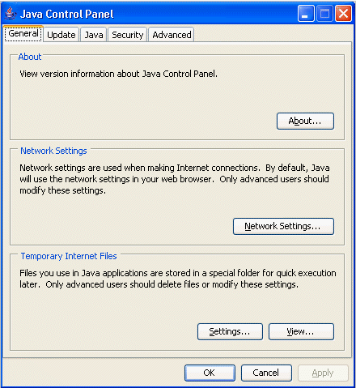
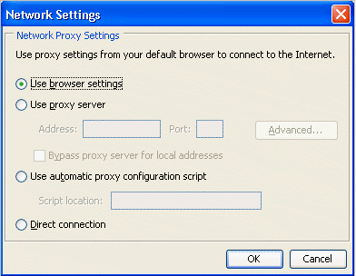
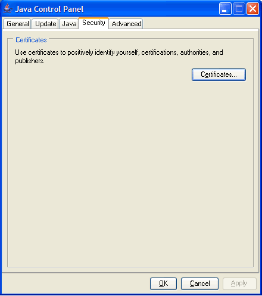
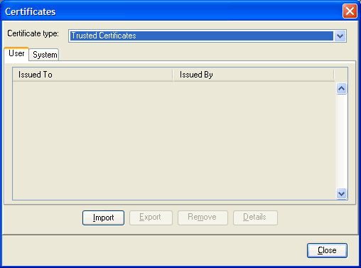
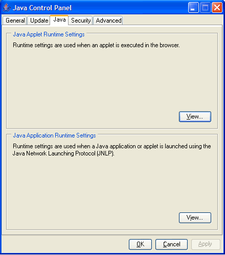
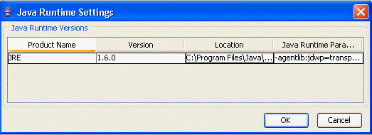
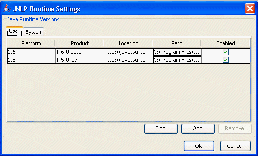
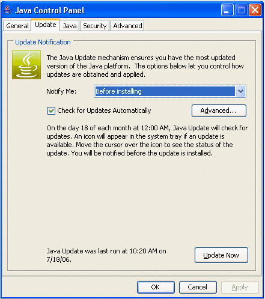
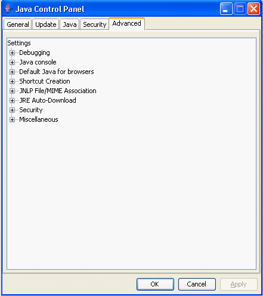

Java 컨트롤 패널 |
Java 컨트롤 패널은 다목적인 컨트롤 패널입니다. 사용의 컴퓨터상에서의 Java 의 실행 방법을 제어하는 다양한 파라미터를 확인하거나 설정할 수가 있습니다. 또, 애플릿을 실행하기 위해서 Sun Java 를 Web 브라우저로 사용할 수 있도록(듯이) 하는 Java Plug-in 나, Java 어플리케이션을 네트워크를 개입시켜 실행할 수 있도록(듯이) 하는 Java Web Start 로 사용하는 임시 파일을, 확인 및 삭제할 수도 있습니다. 또, 애플릿이나 어플리케이션을 네트워크를 개입시켜 안전하게 실행하기 위해서 증명서를 제어하거나 Java Plug-in 로 실행하는 애플릿이나 Java Web Start 로 실행하는 어플리케이션의 실행시 파라미터를 설정하거나 하는 일도 가능합니다. 항상 최신의 Java 를 사용할 수 있도록(듯이) Java 의 버젼을 갱신하는 기구도 있습니다. 게다가 디버그, 데스크탑 통합, 애플릿 처리등의 옵션을 설정할 수도 있습니다. Java 컨트롤 패널에는, 개별적으로 표시 가능한 다음의 패널이 있습니다.
다음에 각 패널에 대해 설명합니다.
「기본」패널을 다음에 나타냅니다.

「버젼 정보」, 「네트워크 설정」, 및 「인터넷 임시 파일」의 3 개의 서브 패널이 있습니다.
「버젼 정보」 버튼을 클릭하면(자), 컴퓨터에 인스톨 되고 있는 최신의 JRE 의 버젼 정보가 표시됩니다.
네트워크 접속에 관한 설정입니다. 「네트워크 설정」 버튼을 클릭하면(자), 「네트워크 설정」다이얼로그가 표시됩니다. 이하의 4 개의 선택사항이 있습니다.
이 체크 박스를 선택하면(자), 브라우저의 디폴트의 프록시 설정이 사용됩니다. 이 설정은 디폴트로 유효 (선택이 끝난 상태)가 되어 있습니다.
다음의 2 개의 선택사항이 있습니다.

FindProxyForURL 함수를 포함하고 있는 JavaScript 파일 (확장자(extension) . js 또는 . pac)의 위치 (URL)를 지정할 수 있습니다. FindProxyForURL 에는, 접속 요구에 사용하는 프록시 서버-를 결정하는 논리가 포함되어 있습니다.
프록시를 사용하지 않는 경우에 선택합니다.
다음의 작업을 실행할 수 있습니다.
설명
|
「시큐리티」패널을 다음에 나타냅니다.

「증명서」 버튼을 클릭하면(자), 다음과 같은 「증명서」다이얼로그가 표시됩니다.

이 다이얼로그에서는, 다음의 타입의 사용자 및 시스템 레벨 (기업 전체)의 증명서를 처리합니다.
신뢰할 수 있는 서명필 애플릿 및 어플리케이션의 증명서입니다.
안전한 사이트의 증명서입니다.
신뢰할 수 있는 증명서에 대한 인증국 (CA)의 증명서입니다. CA 와는 신뢰할 수 있는 증명서의 서명자에 대해서 증명서를 발행하는 기관입니다.
안전한 사이트에 대한 인증국 (CA)의 증명서입니다. CA 란, 안전한 사이트에 대해서 증명서를 발행하는 기관입니다.
서버에 대해서 자기 자신을 인증하는 클라이언트의 증명서입니다.
옵션
「신뢰할 수 있는 증명서」,「시큐어 사이트」, 및 「클라이언트 인증」 의 증명서에 대해서는,「임포트」,「export」,「삭제」,「상세」 라고 하는 4 개의 옵션이 있습니다. 즉, 사용자는 증명서의 상세를 임포트, export, 삭제, 및 표시할 수가 있습니다.
「증명서의 CA」 및 「시큐어 사이트의 CA」 에 대해서는,「상세」 라고 하는 1 개의 옵션 밖에 없습니다. 즉, 사용자는 증명서의 상세를 표시할 수 밖에 할 수 없습니다.
디폴트의 키스토어의 위치
Unix 및 Windows 로
keystore파일의 디폴트의 위치는, 다음과 같습니다.
Unix ${user.home}/. java/deployment/security.Windows
${deployment.user.home}\security예를 들어 Windows 2000/XP 상에서, 사용자
jsmith의deployment.properties파일은 디폴트로 다음의 위치에 있습니다.
C:\Docments and Settings\jsmith\Application Data\Sun\Java\Deployment\security디폴트 이외의 키스토어의 위치
디폴트 이외의 증명서
keystore파일의 위치는, 다음의 프로퍼티명을 사용해,사용자 레벨의deployment.properties 파일로 지정합니다.
「신뢰할 수 있는 증명서」 deployment.user.security.trusted.certs「시큐어 사이트」 deployment.user.security.trusted.jssecerts「증명서의 CA」 deployment.user.security.trusted.cacerts「시큐어 사이트의 CA」 deployment.user.security.trusted.jssecacerts「클라이언트 인증」 deployment.user.security.trusted.clientcerts
옵션
시스템 레벨의 증명서의 옵션은,「export」 와 「상세」 뿐입니다.
디폴트의 키스토어의 위치
「신뢰할 수 있는 증명서」, 「시큐어 사이트」, 및 「클라이언트 인증」의 증명서에는,
keystore파일은 디폴트에서는 존재하지 않습니다. 그 때문에, 각각의 디폴트의 위치는 없습니다.「증명서의 CA」의 키스토어의 디폴트의 위치는 다음과 같습니다.
Unix $JAVA_HOME/lib/security/cacertsWindows
$JAVA_HOME\lib\security\cacerts
「시큐어 사이트 CA」의 키스토어의 디폴트의 위치는 다음과 같습니다.
Unix $JAVA_HOME/lib/security/jssecacertsWindows
$JAVA_HOME\lib\security\jssecacerts
디폴트 이외의 키스토어의 위치
각 증명서의
keystore파일의 위치도, 시스템 레벨의deployment.properties파일이 존재하면, 이 파일로 설정할 수 있습니다 (시스템 레벨의deployment.properties파일은 디폴트로 존재하지 않고,deployment.config파일로 지정한다. 「시스템 레벨의deployment.properties파일」참조). 다음의 프로퍼티을 지정할 수 있습니다.
「신뢰할 수 있는 증명서」 deployment.system.security.trusted.certs「시큐어 사이트」 deployment.system.security.trusted.jssecerts「증명서의 CA」 deployment.system.security.trusted.cacerts「시큐어 사이트의 CA」 deployment.system.security.trusted.jssecacerts「클라이언트 인증」 deployment.system.security.trusted.clientcerts
「Java」패널을 다음에 나타냅니다.

「Java 애플릿의 런타임 설정」이라고 「Java 어플리케이션의 런타임 설정」의 2 개의 서브 패널이 있습니다.
애플릿이 브라우저로 기동했을 때에 사용되는 설정입니다. 「표시」 를 클릭하면(자), 애플릿의 「Java 런타임 설정」이 표시됩니다. Windows 의 경우는, 다음과 같이 표시됩니다.

Unix 의 경우는 「추가」 및 「삭제」버튼도 있습니다.
설명항상 적어도 1 엔트리는 존재합니다. 그 엔트리는, 최신의 인스톨 한 JRE, 즉, Java 컨트롤 패널에 관련짓고 된 JRE 입니다. Windows 의 경우는, 컴퓨터에 인스톨 된 JRE 가 모두 표시됩니다. Java 컨트롤 패널에서는, 레지스트리를 조사해 JRE 를 검색합니다. Unix 의 경우는 달라, 레지스트리가 존재하지 않기 때문에, 사용자가 인스톨 한 JRE 를 검색하는 것은 간단하지는 않습니다. 그 때문에, Unix 에서는 「추가」 및 「삭제」버튼이 있습니다. Unix 의 경우, 버젼 5.0 이후만이 추가됩니다. Windows 의 경우, 모든 JRE 가 레지스트리에 있습니다만, 버젼 5.0 이후만이 표시됩니다. 례:Microsoft Windows 와 Microsoft Internet Explorer 를 사용하고 있어, 먼저 버젼 1.4. 2 를 인스톨 해, 다음에 버젼 5.0 을 인스톨 했다고 합니다. 여기서, 버젼 1.4. 2 를 실행하려면 다음과 같이 합니다.
|
Unix 의 경우는, 「추가」를 클릭해 그 위치를 지정하면 JRE 를 추가할 수 있습니다 (상기의 설명 참조).
Window 및 Unix 에서는, JRE 의 「Java 런타임 설정」을 설정할 수도 있습니다 (생략 가능).
「Java 런타임 파라미터」필드에서 커스텀 옵션을 지정하는 것으로써, Java Plug-in 의 디폴트의 기동 파라미터를 무효로 할 수 있습니다.
classpath와cp의 설정 (후술의「classpath와cp의 설정」참조) 이외는,java커멘드행 호출의 파라미터로 사용되는 구문과 같습니다. 커멘드행 옵션의 완전한 리스트에 대해서는, Java 의 기동 툴을 참조해 주세요.java 기동 툴에는,Windows 용과Solaris and Linux 용무가 있습니다.
다음에 Java 실행 파라미터의 예를 몇개인가 가리킵니다.
Java Plug-in 로
classpath와cp를 설정하기 위해서는 다음의 형식을 사용합니다.java커멘드행의 형식과는 조금 다릅니다.java커멘드행에서는, 등호 기호 (=) 대신에 공백 문자를 사용합니다.
-classpath=<path>
-cp=<path>assertion의 지원의 유효화와 무효화
assertion의 지원를 유효하게 하려면 , 「Java 런타임 파라미터」에 이하의 시스템 프로퍼티을 지정할 필요가 있습니다.
-D[ enableassertions | ea ][:<package name>"..." | : <class name> ]Java Plug-in 로 assertion를 무효로 하려면 , 「Java 런타임 파라미터」에 이하의 시스템 프로퍼티을 지정합니다.
-D[ disableassertions | da ][:<package name>"..." | : <class name> ]assertion의 유효화/무효화에 관한 자세한 것은,「assertion 기능」을 참조해 주세요.
assertion는 Java Plug-in 의 디폴트 설정에서는 무효가 되어 있습니다. assertion의 효과는 Java Plug-in 의 기동시로 결정되므로, Java Plug-in 컨트롤 패널로 assertion 설정을 변경했을 경우는, 브라우저를 재기동해 새로운 설정을 유효하게 할 필요가 있습니다.
Java Plug-in 의 Java 코드에도 짜넣어 assertion가 있기 (위해)때문에, 다음과 같이 Java Plug-in 코드의 assertion를 유효하게 할 수가 있습니다.
-D[ enableassertions | ea ]:sun.plugin트레이스 및 로그의 지원
트레이스란, Java 콘솔에 있어서의 임의의 출력을 트레이스 파일(
. plugin<version>.trace)에 리다이렉트(redirect) 하는 기능입니다.
-Djavaplugin.trace=true
-Djavaplugin.trace.option=basic|net|security|ext|liveconnect디폴트의 트레이스 파일명을 사용하고 싶지 않은 경우는 이하를 지정합니다.
-Djavaplugin.trace.filename=<tracefilename>트레이스와 같게, 로그란, Java 콘솔에 있어서의 임의의 출력을, Java Logging API 를 사용해 로그 파일
(. plugin<version>.log)에 리다이렉트(redirect) 하는 기능입니다. 로그는, 프로퍼티javaplugin.logging를 유효하게 하면(자) 온이 됩니다.
-Djavaplugin.logging=true디폴트의 로그 파일명을 사용하고 싶지 않은 경우는 이하를 지정합니다.
-Djavaplugin.log.filename=<logfilename>세션 마다 트레이스 파일 및 로그 파일을 덧쓰기하지 않게 하는 경우, 프로퍼티을 이하와 같이 설정합니다.
-Djavaplugin.outputfiles.overwrite=false
이 프로퍼티을
false로 설정하면(자), 세션마다의 트레이스 파일 및 로그 파일에 일의의 이름을 붙일 수 있습니다. 디폴트의 트레이스 파일명이나 로그 파일명을 사용하는 경우, 파일명은 이하와 같이 됩니다.
. plugin<username><date hash code>.trace
. plugin<username><date hash code>.log컨트롤 패널로 트레이스나 로그를 설정했을 경우, Plug-in 의 기동시에 트레이스나 로그가 유효하게 됩니다만, Plug-in 의 기동중으로 컨트롤 패널로 변경을 더해도, 재기동할 때까지는 유효하게는 되지 않습니다.
트레이스 및 로그에 관한 자세한 것은,「트레이스 및 로그」라고 하는 장을 참조해 주세요.
Java Plug-in 에서의 애플릿의 디버그
이하의 옵션은, Java Plug-in 로 애플릿을 디버그 할 경우에 사용됩니다. 이 토픽에 관한 자세한 것은,「Java Plug-in 개발자 가이드」의「디버그의 지원」를 참조해 주세요.
-Djava.compiler=NONE
-Xnoagent
-Xdebug
-Xrunjdwp:transport=dt_shmem, address=<connect-address>, server=y, suspend=n
<connect-address>에는, 다음에 Java 디버거 (jdb)에 의해 JVM 에의 접속에 사용되는 임의의 캐릭터 라인 (2502등)을 지정합니다.디폴트의 접속 타임 아웃
서버에의 접속이 애플릿에 의해 행해져 서버가 정상적으로 응답하지 않는 경우, 애플릿은 정지한 것처럼 되어, 그 때문에 브라우저도 정지한 것처럼 됩니다. 이것은 네트워크 접속의 타임 아웃이 디폴트에서는 설정되어 있지 않기 때문입니다.
이 문제를 회피하기 위해서, Java Plug-in 에서는 모든 HTTP 접속에 대한 디폴트의 네트워크 타임 아웃치 (2 분 )가 추가되었습니다. 이 설정은 「Java 런타임 파라미터」로 오버라이드(override) 할 수 있습니다.
-Dsun.net.client.defaultConnectTimeout=<value in milliseconds>설정 가능한 이제(벌써) 1 개의 네트워크 기능 프로퍼티은
sun.net.client.defaultReadTimeout입니다.
-Dsun.net.client.defaultReadTimeout=<value in milliseconds>
주:
Java Plug-in 에서는, 디폴트로
sun.net.client.defaultReadTimeout가 설정되어 있지 않습니다. 설정하는 경우는, 상기의 「Java 런타임 파라미터」로 설정해 주세요.네트워크 기능 프로퍼티의 설명:
sun.net.client.defaultConnectTimeout
sun.net.client.defaultReadTimeout이러한 프로퍼티에서는,
java.net.URLConnection로 사용되는 프로토콜 핸들러에 대해서, 디폴트의 접속 및 읽어내 타임 아웃치를 지정합니다. 프로토콜 핸들러에 의해 설정되는 디폴트 값는-1으로, 이것은 타임 아웃이 설정되어 있지 않은 것을 의미합니다.
sun.net.client.defaultConnectTimeout는, 호스트에게로의 접속을 확립할 때의 타임 아웃 (밀리 세컨드)을 지정합니다. 예를 들어, HTTP 접속의 경우는, HTTP 서버에의 접속을 확립할 때의 타임 아웃입니다. FTP 접속의 경우는, FTP 서버에의 접속을 확립할 때의 타임 아웃입니다.
sun.net.client.defaultReadTimeout는, 자원에의 접속이 확립되어 있을 때의, 입력 스트림로부터 읽어낼 때의 타임 아웃 (밀리 세컨드)을 지정합니다.이러한 프로퍼티에 대한 정식적 설명은,「Networking Properties」를 참조해 주세요.
JNLP 어플리케이션이 기동되었을 때에 사용하는 설정입니다. 「표시」 를 클릭하면(자), 「JNLP 런타임 설정」이 표시됩니다. 다음과 같이 표시됩니다.

이 표에는 다음의 정보가 있습니다.
이 패널에는 다음의 버튼이 있습니다.
「선택」 버튼에서는, 「패스」(커멘드) 필드의 내용을 선택할 수 있습니다. 기존의 JRE 의 「패스」(커멘드) 필드를 클릭했을 경우에 유효하게 됩니다.
「검색」 버튼에서는, 시스템에 인스톨 된 JRE 를 검색하기 위한 툴이 표시됩니다.
「추가」 버튼에서는, JRE 의 겉(표)에 새로운 행이 추가됩니다.
「삭제」 버튼에서는, JRE 의 겉(표)로부터 행이 삭제됩니다.
「이해」 버튼을 클릭하면(자), 구성 파일로 변경 내용이 보존되어 다이얼로그가 다뭅니다. 「취소」 버튼을 클릭하면(자), 변경 내용이 파기되어 다이얼로그가 다뭅니다.
「업데이트」패널을 다음에 나타냅니다.

주:이 패널은 1.4. 2_01 이상의 릴리스의 Windows 판으로, 관리자 특권을 가지는 사용자만을 이용할 수 있습니다. |
「업데이트」패널은 Java Update Scheduler (jusched.exe)와 함께 사용해, 최신의 Java 갱신을 최종 사용자에 제공하기 위해서 사용합니다.
「업데이트」탭에는, 2 개의 기본적인 옵션이 있습니다.
자동 갱신은 스케줄 된 간격으로 실행됩니다. 「업데이트를 자동적으로 체크」 체크 박스를 클릭해 선택합니다.
수동 갱신은 「금방 업데이트」 버튼을 클릭해 실행합니다.
자동 갱신을 선택했을 경우는,「통지」 드롭 다운 메뉴로부터 통지 방법을 설정해,「상세」 버튼으로부터 갱신 스케줄을 설정합니다.
통지 방법은, 갱신을 다운로드하기 전과 인스톨 하기 전에 통지하는 일도, 갱신을 인스톨 하기 전에 통지하는 것 (즉 다운로드는 자동적으로 행해진다)도 선택할 수 있습니다.
「상세」 에서는, 갱신을 실시하는 빈도를 일진, 주차 (디폴트), 또는 월차로부터 선택할 수 있습니다. 일진 갱신에서는 갱신을 할 때 각, 주차갱신에서는 요일과 시각, 월차 갱신에서는 날과 시각을 선택할 수 있습니다.
「금방 업데이트」 버튼을 클릭하면, 언제라도 수동 갱신이 가능합니다. 즉시에, 스케줄 하고 있지 않는 갱신을 실행할 수 있습니다.
Java Update Scheduler (jusched.exe)는, 「업데이트」탭으로 「업데이트를 자동적으로 체크」 를 선택했을 때에, 자동 갱신을 기동하기 위해서 사용합니다. jusched.exe 는 백그라운드 프로세스로서 실행되어 사용자가 미리 정의한 간격으로 Update Manager 를 기동합니다. 이전 격은 「업데이트」탭의 「상세」 버튼으로 설정합니다. Update Manager 에서는, 갱신 프로세스를 조정합니다.
jusched.exe 는, SDK/JRE 를 인스톨 후, 컴퓨터를 재기동하면(자) 기동합니다. 일반적으로, 사용자에게는 실행하고 있는 것을 모릅니다만, 「Windows 태스크 매니저-」의 「프로세스」탭으로 확인할 수 있습니다. 어떠한 이유로써 스케쥴러를 실행하고 싶지 않은 경우는, 「프로세스」탭의 「프로세스의 종료」 버튼을 사용해 종료할 수 있습니다.
「상세」패널을 다음에 나타냅니다.

「디버그」, 「Java 콘솔」, 「브라우저의 디폴트 Java」, 「데스크탑의 통합」, 「JNLP 파일 /MIME 가 관련짓고」, 및 「시큐리티」의 옵션이 있습니다.
트레이스와 로그를 유효하게 할 수 있습니다. 트레이스와 로그에 대해, 및 그 실행시 파라미터의 설정 방법법에 대한 자세한 것은,「트레이스 및 로그」를 참조해 주세요.
3 개의 옵션이 있습니다.
자세한 것은,「Java 콘솔」을 참조해 주세요.
<APPLET> 태그의 지원 (Windows 마셔)특정의 브라우저로 표준의 <APPLET> 태그에 Sun VM 를 사용할지 어떨지를 지정합니다.
주:Mozilla 및 Netscape 7 이 양쪽 모두 인스톨 되고 있어, Mozilla 및 Netscape 에 대한 |
데스크탑에 쇼트 컷을 작성하기 위한 , Java Web Start 의 옵션입니다. 옵션을 다음에 나타냅니다.
JNLP MIME 타입에 파일을 관련짓고 할 수 있습니다. 옵션을 다음에 나타냅니다 (라디오 버튼으로, 1 개(살)만 선택할 수 있다).
옵션은 체크 박스가 되어 있습니다. 옵션은 필요한 만큼 선택할 수 있습니다. 디폴트에서는, 지정된 옵션을 제외해, 모두 선택되고 있습니다. Java 의 시큐리티 옵션을 다음에 나타냅니다.
디폴트에서는, Java 아이콘을 시스템 트레이에 배치하는 옵션이 선택됩니다.
기동하는 디폴트 브라우저의 위치를 지정합니다.